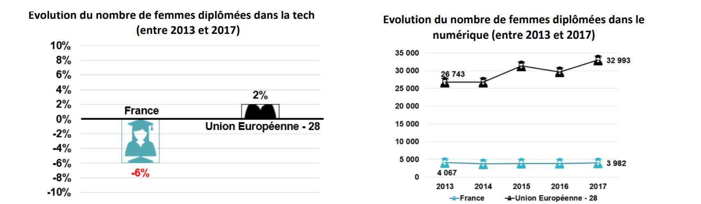
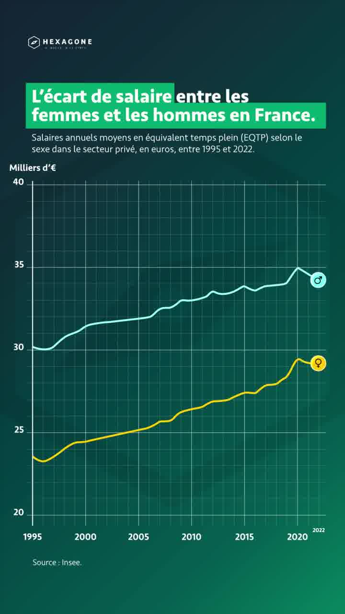

Chronologie
Découvrez l'évolution des femmes dans le secteur numérique.
Introduction
L’évolution des femmes concernant le secteur numérique a été marquée par des avancées mais aussi des résistances alternant progrès et stagnation. Voici une chronologie de la féminisation de secteurs traditionnellement « masculins », illustrant le mouvement qui a progressivement conduit au développement des idées par les femmes d’un secteur historiquement masculin.
Ce document explique la baisse du nombre de femmes dans les domaines numériques depuis les années 1990. L'informatisation croissante, devenue un enjeu stratégique, et l'accès privilégié des hommes aux ordinateurs individuels sont pointés comme causes principales. L'ouvrage *Les oubliées du numérique* d'Isabelle Collet est recommandé pour approfondir le sujet. Trois exemples de métiers illustrent cette évolution, montrant une forte diminution de la présence féminine au fil des ans.

Entre 2013 et 2017, la proportion de femmes diplômées dans le secteur technologique a diminué de 6 % en France, contrairement à une légère augmentation au sein de l'Union Européenne.

L'écart salarial entre les hommes et les femmes en France de 1995 à 2022 persiste, malgré une augmentation des salaires pour les deux sexes. Les données de l'Insee montrent une différence significative entre les rémunérations.